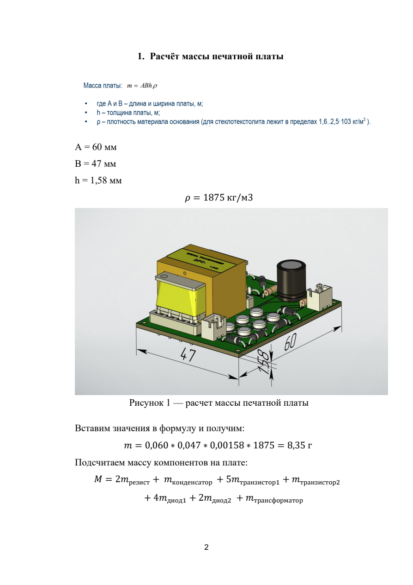
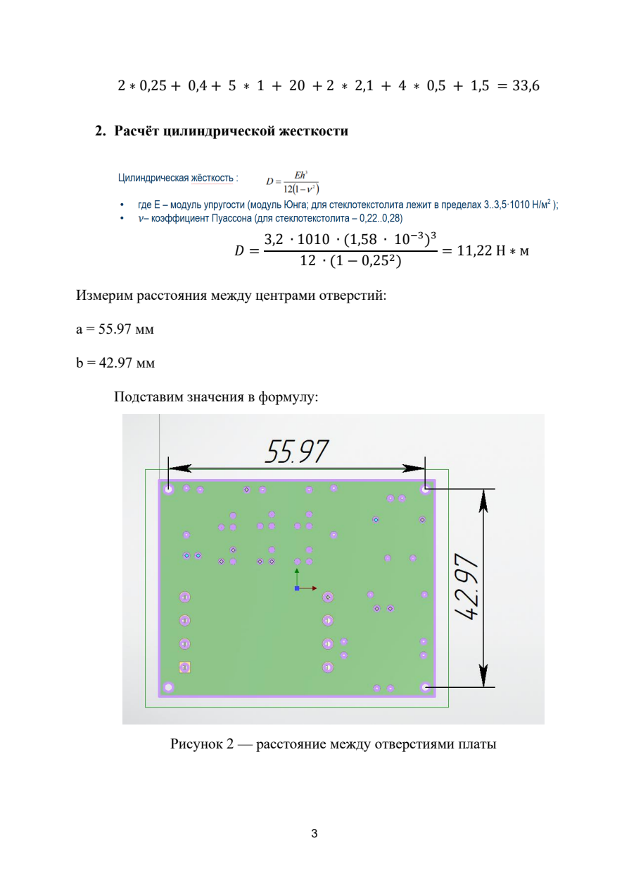
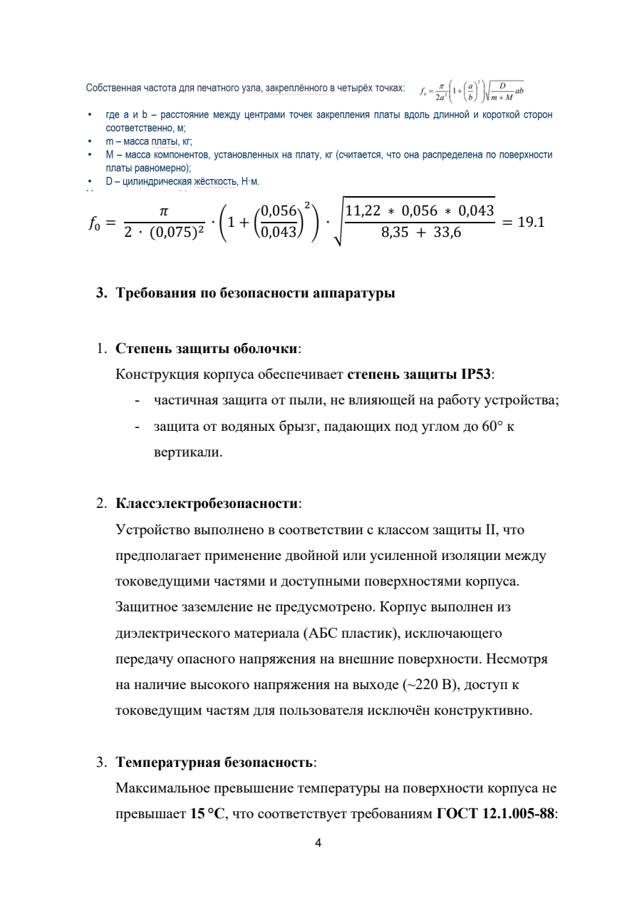
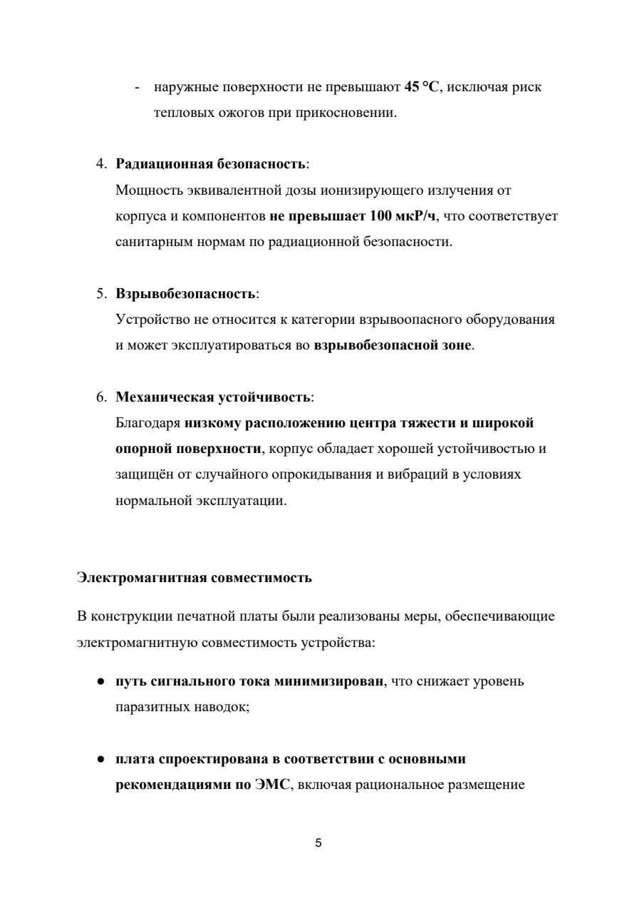

Габариты платы: A = 60 мм, B = 47 мм, h = 1,58 мм, ρ = 1875 кг/м³

Расстояния между центрами монтажных отверстий: a = 55,97 мм, b = 42,97 мм

Благодаря низкому расположению центра тяжести и широкой опорной поверхности корпус защищён от случайного опрокидывания и вибраций в условиях нормальной эксплуатации.
| Параметр безопасности | Описание |
|---|---|
| Степень защиты оболочки | IP53 — частичная защита от пыли; защита от водяных брызг под углом до 60° к вертикали |
| Класс электробезопасности | Класс II — двойная или усиленная изоляция. Защитное заземление не предусмотрено |
| Материал корпуса | АБС пластик (диэлектрик) — исключает передачу опасного напряжения на внешние поверхности |
| Температурная безопасность | Макс. превышение температуры поверхности: не более +15 °C (до 45 °C), ГОСТ 12.1.005-88 |
| Радиационная безопасность | Мощность дозы ионизирующего излучения ≤ 100 мкР/ч |
| Взрывобезопасность | Устройство не относится к категории взрывоопасного оборудования |

В конструкции печатной платы реализованы меры, обеспечивающие электромагнитную совместимость устройства:
